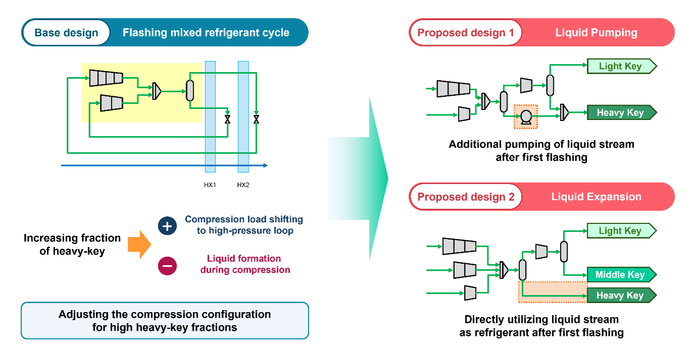
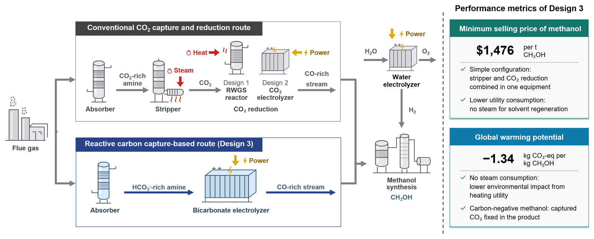
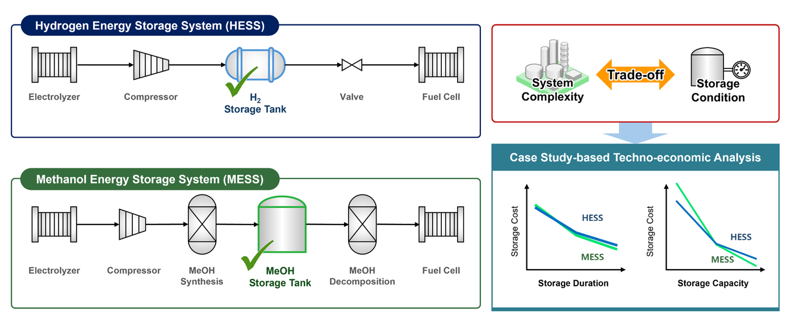
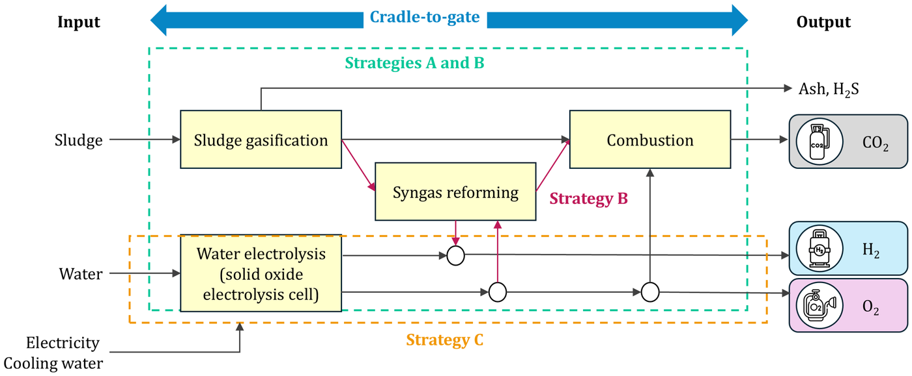
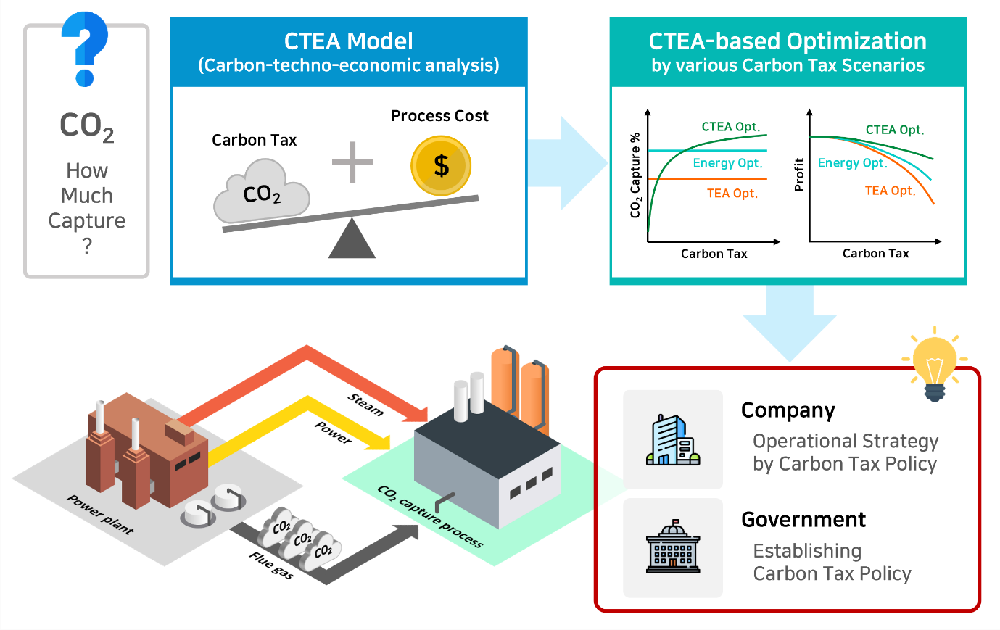
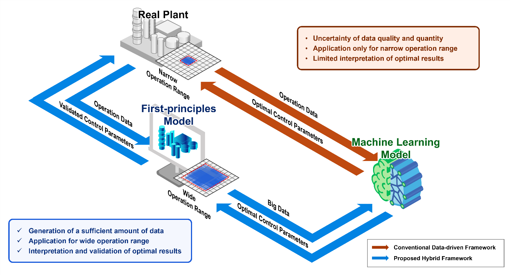

Designing low-carbon processes — from liquid hydrogen to CO₂-derived fuels.
I'm Sihwan Park (박시환), a process systems engineer. My Ph.D. work redesigned hydrogen liquefaction and cryogenic energy systems; at Korea University I now design routes that turn captured CO₂ and waste into green methanol and hydrogen, judged on cost and carbon together.
Research at a glance
All research →
Liquid Hydrogen & Cryogenic Energy
Cutting the energy cost of hydrogen liquefaction and putting the cold energy back to work.

Low-Carbon Fuels from CO₂ & Waste
Turning captured CO₂ and sewage sludge into green methanol and hydrogen, evaluated by eTEA.
Recent work
All publications →Background
Full background →Two core themes, one goal — processes that use less energy and emit less carbon.
Liquid Hydrogen & Cryogenic Energy
Ph.D. · Pusan National UniversityLiquefaction is the most energy-intensive step in the liquid-hydrogen value chain. I redesign the cooling cycles and put the cold energy they create back to work.
Hydrogen Liquefaction
Conventional liquefiers operate far from their thermodynamic minimum work. I redesign the cycle itself — triple-pressure Claude cycles, bypass configurations, and flashing mixed-refrigerant precooling — to cut exergy losses and specific energy consumption.

Cold-Energy Recovery & Energy Storage
Which carrier stores large-scale renewable energy best? I compare hydrogen- and methanol-based storage on thermodynamic and economic grounds, and recover LNG and liquid-hydrogen cold energy for power and chemical production.
Low-Carbon Fuels from CO₂ & Waste
Postdoc · Korea UniversityMy current work turns captured CO₂ and wet waste into green methanol and hydrogen. Each route is judged on cost and life-cycle emissions together through environmental techno-economic assessment (eTEA).
Green Methanol from Captured CO₂
Amine capture spends most of its energy on solvent regeneration. Reactive carbon capture electroreduces the absorbed CO₂ directly, removing the stripper and CO₂ compressor. I compare it with conventional CCU routes to methanol and identify the electrolyzer performance at which it wins.

Hydrogen from Sewage Sludge
Supercritical water gasification handles wet sludge without drying, and its product gas can either heat a solid oxide electrolyzer or be reformed into extra hydrogen. I design integrated SCWG–SOEC systems and quantify this fuel-versus-resource trade-off.
Evaluation & Modeling

Carbon-Techno-Economic Analysis
Cost and carbon are usually optimized separately. CTEA folds carbon-emission cost directly into techno-economic optimization, so a process can be tuned for economics and climate impact at once.

Hybrid AI Modeling
Purely data-driven models break outside their training range. I combine first-principles models with machine learning for surrogate and control frameworks that stay reliable on real plants.